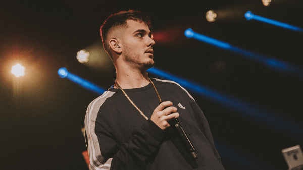

Kaze
Kaze, cuyo nombre real es Cristian Carrión Chacón, es un rapero y productor musical español que
lleva en la
escena hip hop de su país desde 2007. Nació el 6 de junio de 1993 en Cartagena, España. Antes de empezar con
el rap escribía trovos, que son un tipo de poemas que se acompañan con guitarra.
Desde sus inicios en la música ya gozaba con cierto reconocimiento de modo que a la edad de 16 años ya
empezaba a formar parte de carteles con otros grandes exponentes de la escena nacional de aquel entonces
como Gordo Master, Duo Kie, Piezas, Xhelazz o Sho-Hai.
Acru
Agustín Cruz, más conocido por su nombre artístico Acru, es un rapero originario de la
provincia de Tucumán,
Argentina, nacido el 4 de junio de 1997.
Es considerado como uno de los mejores freestylers de Argentina, en cuánto a skills y métricas se debe,
compitió en los torneos de plaza de freestyle como El Quinto Escalón, entre otros de escenarios.
Su primer tema registrado se llama "Viejita mía!" del 28 de enero del año 2014, y su primera batalla
registrada es "Acru vs Fortuna", subida el 5 de septiembre del año 2013.
Bnet
Javier Bonet González, mejor conocido por su nombre artístico "Bnet" es un freestyler español,
conocido por
su particular estilo con técnicas combinado a un buen punchline. También es conocido por la tranquilidad que
posee en el escenario, siendo esto un recurso constante de sus rivales. Es considerado uno de los mejores
freestylers españoles en la actualidad.
Es el campeón de la Internacional 2019 de Red Bull, en la cual derrotó a oponentes como Valles-T, SNK,
Yartzi y Carpediem. Además, fue campeón de España en su edición 2018, consiguiendo el 4to lugar en la
internacional del mismo año.

- 